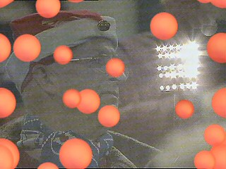
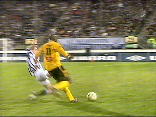
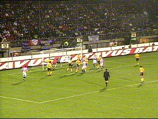
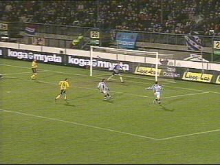
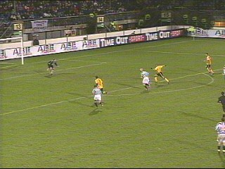
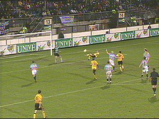
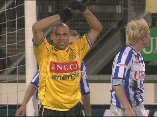

|
SC Heerenveen - Roda JC (2-1) 20 december 2003 |

Ter verhoging van de sfeer is het publiek van
kerstmutsjes voorzien. Joepie!

Op het spekgladde veld krijgt Kone de eerste
kans van de wedstrijd. In de 3e minuut schiet hij
net naast doel.

In de 7e min. kopt Samaras binnen: 1-0.

De eerste helft is voor Heerenveen. Roda heeft
slechts enkele kansjes die door Anastasiou
verknald worden. Heerenveen mist ook enkele
kansen, vooral uit corners.
In de tweede helft spelen beide teams slecht.
Roda kan de bal niet in de ploeg houden terwijl de
Friezen er alles aan doen om de voorsprong vast
te houden. Dat lukte definitief in de 78e minuut
door een doelpunt van Selakovic: 2-0.

Op het moment dat de wedstrijd beslist lijkt
scoort Cristiano fraai 2-1, (89').

Nauwelijks een minuut later schiet de Braziliaan
op de paal. Een sensatie blijft helaas uit.

Cristiano is nu clubtopscorer. Roda zakt naar de
grauwe middenmoot.
Na de winterstop wacht de thuiswedstrijd tegen
Ajax.